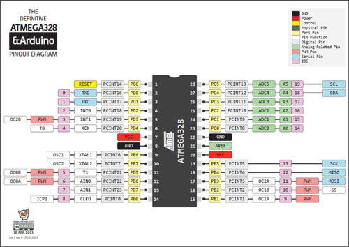
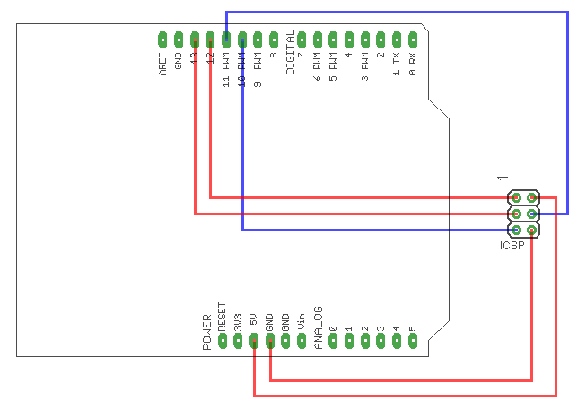
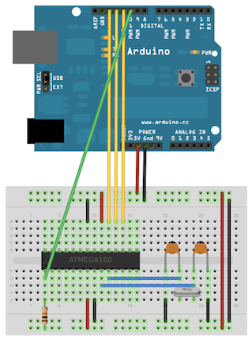

Наконец-то для моего долгостроя, проекта взрывных! часов , пришла микросхемка ATmega 328. Она полностью пуста и задача поставлена прошить в ней bootloader. После прошивки и нескольких навесных элементов она будет почти Arduino UNO.

Данный пример может помочь новичкам начавших работу с микроконтроллерами. Для прошивки загрузчика потребуется ISP программатор. Таких программаторов бывает много и разных. В моем случае в качестве программатора выступает плата Arduino UNO. В Arduino IDE открываем примеры, ищем ArduinoISP.

Открывшийся скетч заливаем в UNO. После загрузки скетча программатор готов и нужно правильно подключить ATmega 328.
Соединяем все как на рисунке

Далее «Сервис>>Плата» и выбираем тип платы для которой хотим записать загрузчик, в нашем случае — «Arduino UNO». Далее «Сервис>>Программатор>>Arduino as ISP». В меню сервис выбираем «Записать загрузчик».
Важное условие для достижения положительного результата, это подключение резонатора 16 МГц на ногах 9 и 10.
Вот и все. Теперь смело вынимаем контроллер из платы Ардуино и вместо него вставляем прошитый. Возвращаем настройки Программатора.